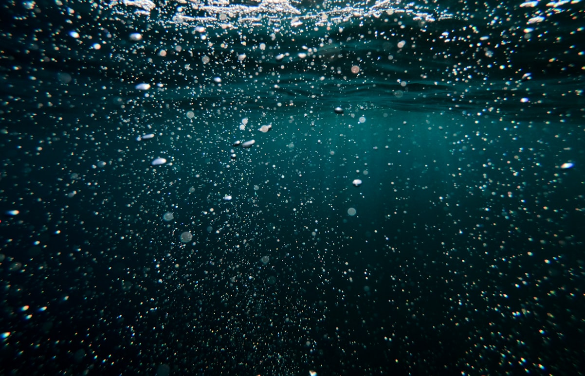
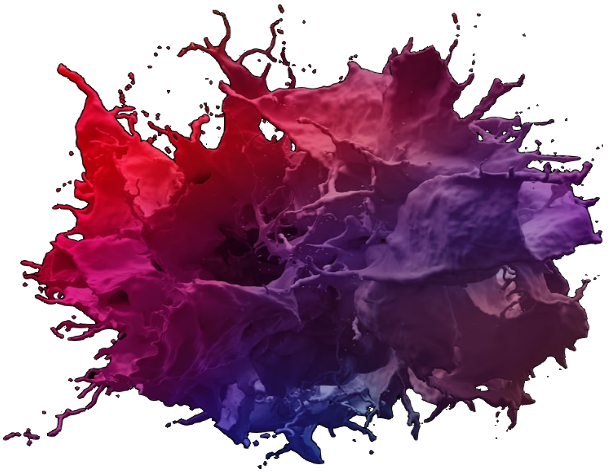
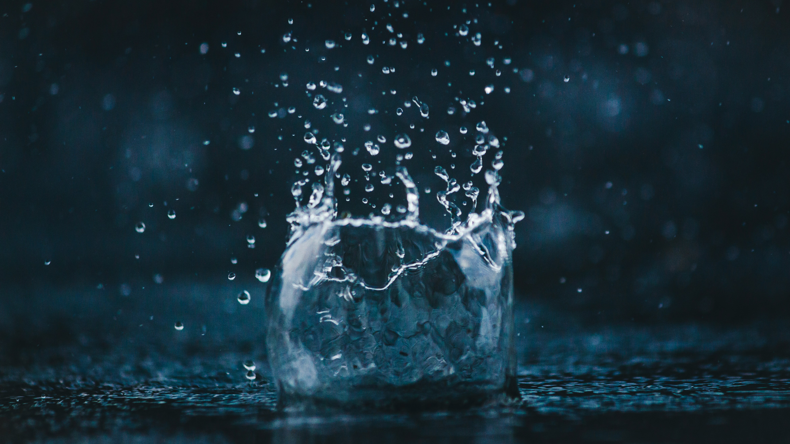
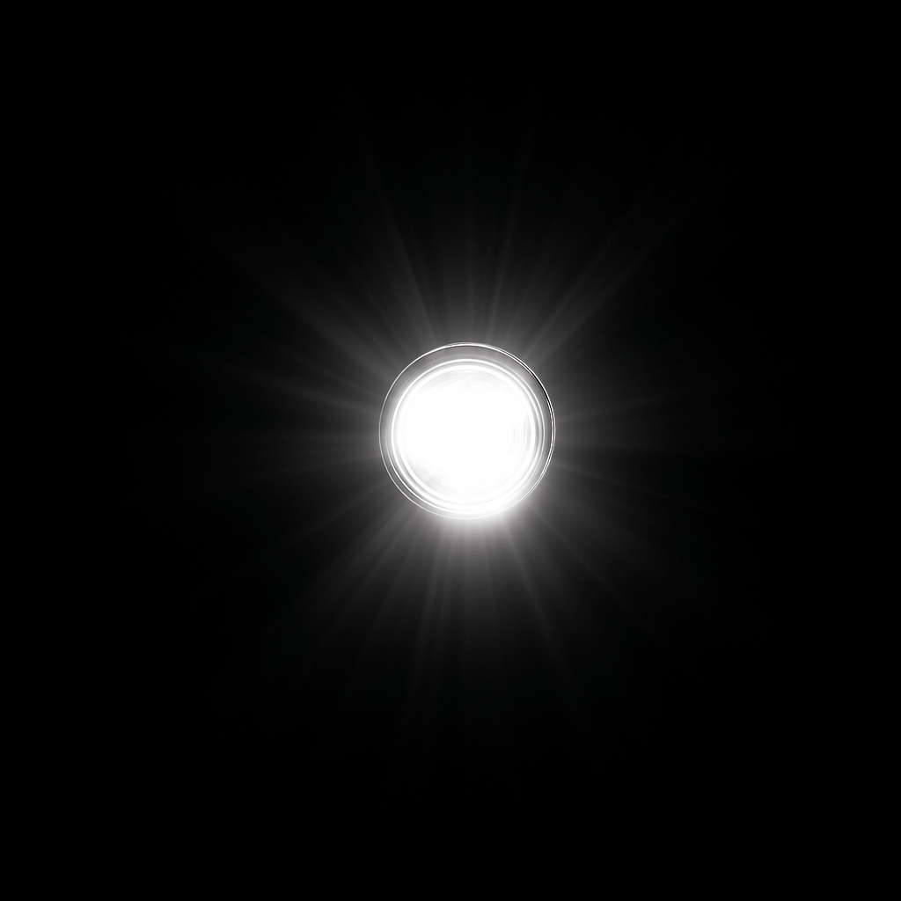

Der Arbeitsprozess Ⅱ
Produktdarstellung und Anpassung an die Zielgruppe





Produktbilder – Vorher vs. Nachher
Ausgangssituation
Die ursprünglichen Produktbilder entsprachen weder ästhetischen noch professionellen Standards. Es fehlte an Konsistenz hinsichtlich Größe, Ausrichtung und Format.
- Verbesserung der visuellen Markenwirkung
- Stärkung des Nutzervertrauens durch professionelle Darstellung
- Reduktion visueller Ablenkung in der Kaufentscheidung
- Visuelle Einheitlichkeit über alle Produktkategorien hinweg
Ziele
- Bearbeitung aller Bilder in Krita mit präziser Ebenenausrichtung
- Bildoptimierung durch KI: Hintergrund entfernt in Canva und Galerie-App
- Hintergrund der Chipstüten auf deren Farbpalette abgestimmt
- Erstellung thematischer Hintergründe für exotische Produkte
- Farbmodifikation und Invertierung bei „Joozy"-Produkten
- Einheitliche Produktbilder auf der Landingpage
- Verzicht auf Hintergrundbilder in der Detailansicht
Vorgehen
- Visuelle Konsistenz: Einheitliche Ausrichtung, Formate und Größen
- Markenstärkung: Bildsprache entspricht nun dem Selbstbild des Shops
- Conversion-Förderung: Weniger Ablenkung = schnellere Entscheidungen
- Zielgruppenansprache: Optimiert auf Hauptzielgruppe 16–35 Jahre
Ergebnisse
Startseiten-Redesign – Visuelle & strukturelle Optimierung

Neu hinzugekommen: ein eigenes Favicon im Browser-Tab.

- Ausgangssituation: Drei Platzhalter oben – visuell und inhaltlich wenig ansprechend.
- Redesign: Hochwertiges, buntes Werbeplakat mit „Summer Vibes".
- Farbkonzept: Lila, Pink und warme Töne erzeugen emotionale Wärme und Nostalgie.
- Preisstrategie: Einführung der 12er-Packs (statt 24er) basierend auf Endkund:innen-Research.
- Designstrategie: Dosengrafiken im Ölmalerei-Stil – kohärent, hochwertig.
- Conversion-Ziel: Preisvergleich (UVP durchgestrichen) fördert sofortige Kaufentscheidung.
Erkenntnisse aus dem Einsatz von KI
- Generalisierung: ChatGPT liefert brauchbare Entwürfe, trifft selten die markenspezifische Bildsprache.
- Fehlendes situatives Gespür: Nuancen in Tonalität oder kulturelle Referenzen erkennt sie kaum.
- Kontextverlust bei Komplexität: Mehrstufige Anforderungen führen zu inkonsistenten Ergebnissen.
KI als Starthilfe – jede Grafik manuell verfeinert, um Emotion und Markenidentität abzubilden.